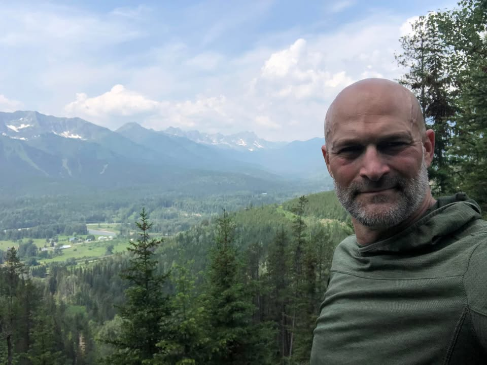
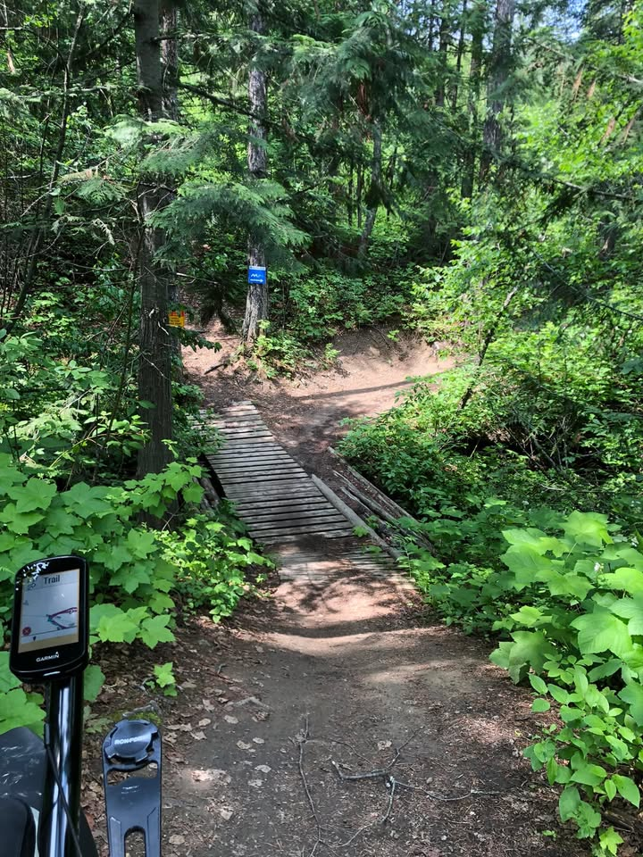
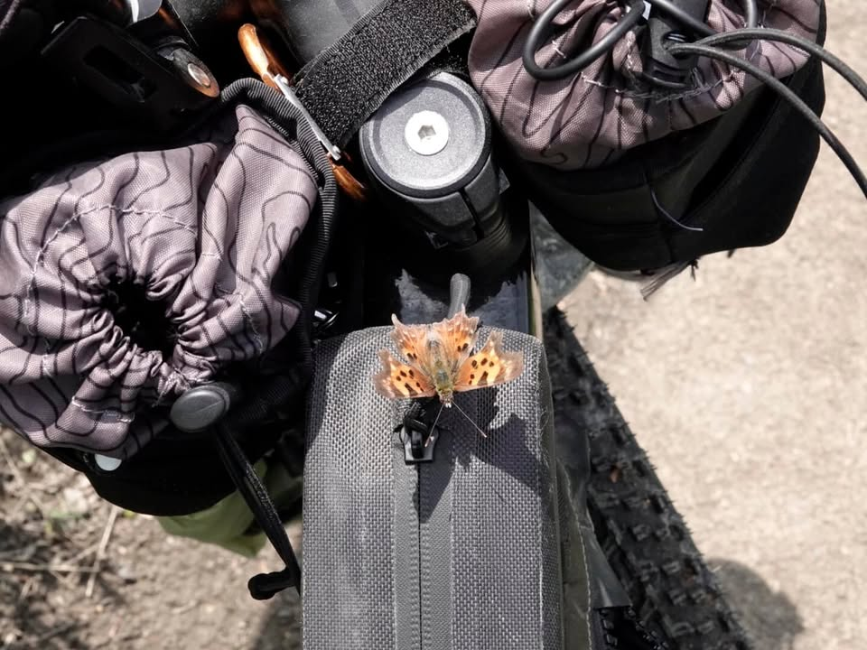
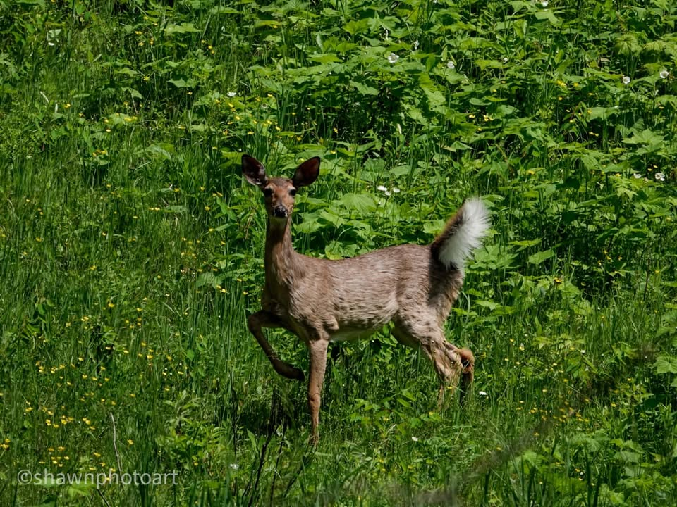
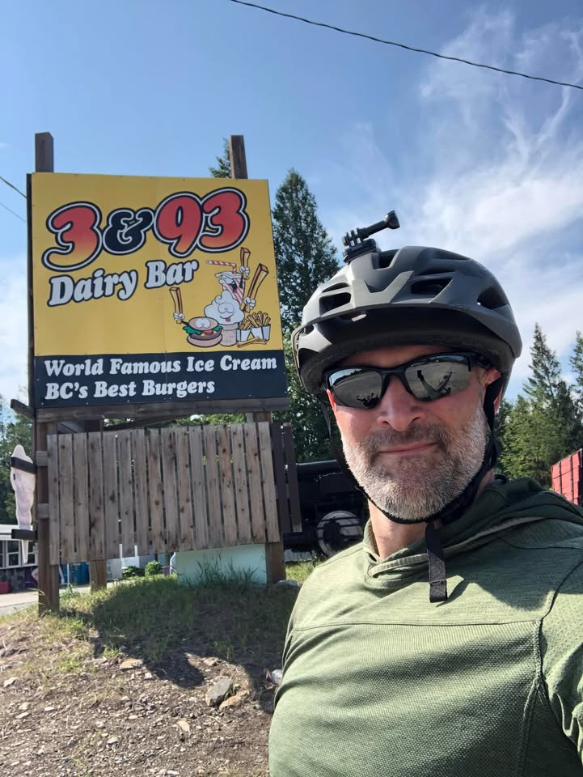
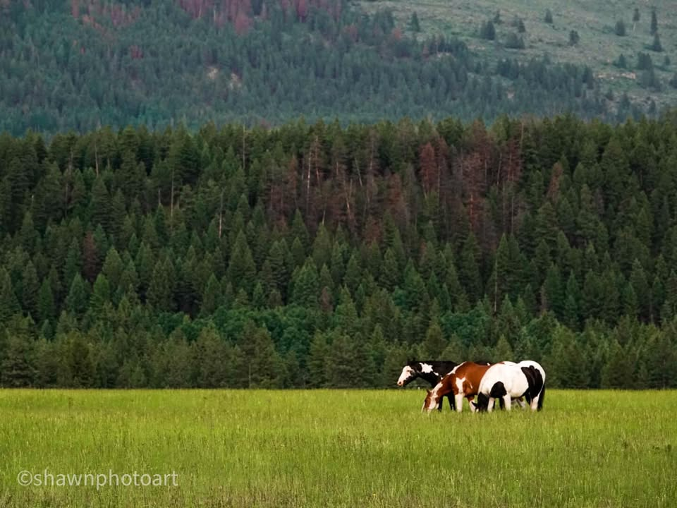
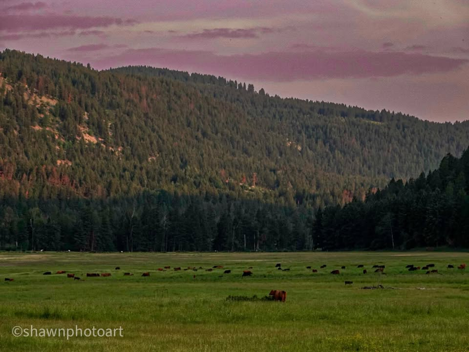
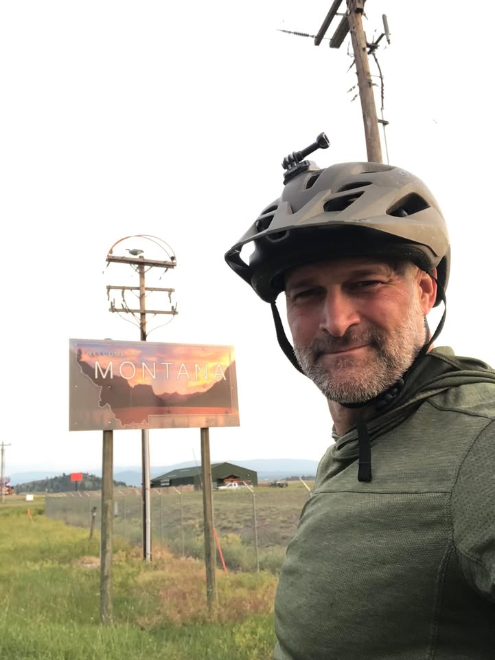

Day 4.. dear, Best burgers in British Columbia, Borders

From the Journey
Started off the day with with another bath and a slow pack up. In town I still had some chores to do. I mailed a package home, picked up some last minute, stuff from the bike shop, did my grocery shopping and had an amazing breakfast with a great view.

From the Journey
The first two hours south out of Freny was on a nice single track trail. Once I got past some of the steep hills, it was a nice shaded trail with some great views. On one of my breaks, I had Little butterfly come and say hi.

From the Journey
Luckily, I didn’t see any bears on the small trail, there was nowhere for either of us to go in a Face to face encounter. On this trail instead of bear, there was lots of white tail deer, and dozens of face-to-face encounters.

From the Journey
After getting off the trails and winding my way through some old logging roads I burst into the metropolis of Grasmere. With the population of a couple hundred this bustling city is famous for its roadside restaurant 3&93 dairy bar, which boasts the best hamburgers in British Columbia. I’ve never been to another hamburger joint in British Columbia, so I would have to agree with them. My 6 inch tall bacon double cheeseburger with mushrooms and sauce is pretty good proof for me. I also downed three orange crushes and a root beer slushy.

From the Journey
Next miles were very easy cruising on a lot of hardball and dirt packed roads. Horses and cows spotted the magnificent views as I traveled on a mostly downward elevation. At one point the road dipped way down in a huge hill to cross a large bridge. With no headwind I reached a speed of 46 miles an hour. Although the other side of the bridge I had to walk up a mile, but it was worth it.

From the Journey
In the area where I was looking to camp, I really couldn’t find a good place. I reached a point where it was only seven more miles to the United States border. Then another 12 miles after that into Eureka where I would find a decent size town with a hotel and restaurants to choose from. I decided to push on and arrive just after sundown. It was well worth the push.

From the Journey
Crossing the US border headlights of thoughts about Borders and boundaries and they are a funny thing. Humans put them in place, but they’re really arbitrary. We put them there to organize the world. But the worlds a messy place. Many of the borders and boundaries that we hold true, in reality are meaningless. I Challenge you to take a look at a boundary or limit you’ve placed on yourself and excel through it. Maybe run that extra mile, put that extra plate on the weight rack, or get to know somebody from a different culture and breakthrough that boundary. We might surprise ourselves.

From the Journey